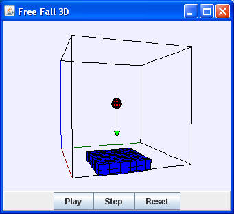

Free Fall 3D simulates the same physics as the Free Fall model but with a 3D View of the model's data. The ball falls with constant acceleration g=-9.8 m/s2 in the z direction. Click-dragging on the ball changes its height but leaves its velocity unchanged. The reset button stops the animation and sets the initial conditions to y=1.8 and vy=0. See the Free Fall model for a description of this model is implemented in Ejs.
The Free Fall 3D model is a designed to teach Ejs modeling. Right click within the simulation to examine this model in the Ejs modeling and authoring tool. See:
The Easy Java Simulations (EJS) manual can be downloaded from the ComPADRE Open Source Physics collection and from the Ejs website.
This simulation was created by Wolfgang Christian using the Easy Java Simulations (Ejs) modeling tool. You can examine and modify this simulation if you have Ejs installed by right-clicking within a plot and selecting "Open Ejs Model" from the pop-up menu.
Information about Ejs is available at: <http://www.um.es/fem/Ejs/>.